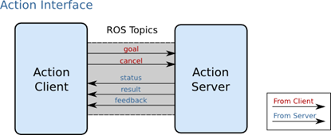

action 动作
简介
actionlib是ROS中一个很重要的库，类似service通信机制，actionlib也是一种请求——响应机制的通信方式。
actionlib主要弥补了service通信的一个不足：就是当机器人执行一个比较耗时的任务时，假如利用service通信方式，那么client会很长时间接受不到反馈，致使通信受阻。
当service通信不能很好的完成任务的时候，使用actionlib则可以更好地实现长时间的通信过程。actionlib通信过程可以随时查看过程进度，也可以终止请求。这样的一个特性，使得actionlib在一些特别的机制中拥有很高的效率。
原理
action的工作原理是client-server模式，也是一个双向的通信模式。通信双方在ROS action Protocol下通过消息进行数据的交流通信。client和server为用户提供一个简单的API来请求目标（在客户端）或通过函数调用和回调来执行目标（在服务器端）。

通信的双方在ROS action Protocal下进行通信，是通过接口来实现的，如下图：

我们可以看到,客户端可以向服务器发送目标指令或取消动作指令,而服务器则可以给客户端发送实时的状态信息,结果信息,反馈信息等,从而完成了service没法做到的功能。
action规范
利用动作库进行请求响应，actoin的内容格式包含三个部分:目标、结果、反馈。
- 目标
机器人执行一个动作，应该有明确的移动目标信息，包括一些参数的设定，方向、角度、速度等等。从而使机器人完成动作任务。 - 结果
当运动完成时，action服务器把本次运动的结果数据发送给客户端，使客户端得到本次动作的全部信息，例如可能包含机器人的运动时长，最终姿势等等。 - 反馈
在动作进行的过程中，应该有实时的状态信息反馈给服务器的实施者(client)，告诉实施者动作完成的状态，可以使实施者作出准确的判断去修正命令。
规范格式如下：
# Define the goal
uint32 dishwasher_id # Specify which dishwasher we want to use
---
# Define the result
uint32 total_dishes_cleaned
---
# Define a feedback message
float32 percent_complete
添加依赖和生成文件
写完之后修改文件夹里CmakeLists.txt如下内容:
find_package(catkin REQUIRED genmsg actionlib_msgs actionlib) add_action_files(DIRECTORY action FILES DoDishes.action) generate_messages(DEPENDENCIES actionlib_msgs) add_action_files(DIRECTORY action FILES Handling.action) generate_messages( DEPENDENCIES actionlib_msgs)修改package.xml,添加所需要的依赖如下:
<build_depend>actionlib </build_depend> <build_depend>actionlib_msgs</build_depend> <run_depend>actionlib</run_depend> <run_depend>actionlib_msgs</run_depend>然后回到工作空间 catkin_ws进行编译。
catkin_make
常用action类型
介绍常见的action类型以及其定义
AddTwoInts.action
文件位置:自定义action文件
#表示将两个整数求和 int64 a int64 b --- int64 sum ---AutoDocking.action
文件位置:自定义action文件
#goal --- #result string text --- #feedback string state string textGetMap.action
文件位置:nav_msgs/GetMap.action
#获取地图信息 --- nav_msgs/OccupancyGrid map --- #feedback无部分MoveBase.action
文件位置:geometry_msgs/MoveBase.action
geometry_msgs/PoseStamped target_pose --- --- geometry_msgs/PoseStamped base_position